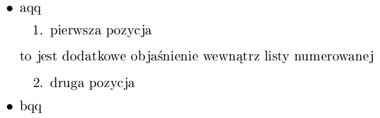

Pakiet expdlist zmienia definicjê ¶rodowiska description; nowa wersja daje wiêksze mo¿liwo¶ci wp³ywu na wygl±d listy.
W najprostszej wersjii wywo³ania:
\begin{description}
\item[aqq] bqq
\item[cqq] dqq
\end{description}
¶rodowisko zachowuje siê tak, jak standardowe, ale mo¿na równie¿
okre¶liæ dodatkowe parametry steruj±ce -- postaæ wywo³ania jest nastêpuj±ca:
\begin{description}[\breaklabel\setleftmargin{30pt}\compact\setlabelstyle{\itshape}]
\item[aqq] bqq
\item[cqq] dqq
\end{description}
gdzie parametr okre¶la dodatkowe w³asno¶ci (s± to normalne wywo³ania poni¿ej przedstawionych makroinstrukcji):
| parametr | opis |
|---|---|
| \setleftmargin{rozmiar} | rozmiar
okre¶la wielko¶æ lewego marginesu np: \setleftmargin{30pt} |
| \setlabelphantom{tekst} | wielko¶æ lewego
marginesu jest okre¶lana na podstawie rozmiaru zajmowanego przez
tekst np: \setlabelphantom{aqq bqq} |
| \breaklabel | je¿eli etykieta jest d³u¿sza ni¿ za³o¿ony rozmiar (wielko¶æ naturalna, wielko¶æ okre¶lona przez parametr \setleftmargin lub \setlabelphantom) to tekst opisu etykiety zacznie siê ,,od nowej'' linii |
| \compact | mniejsze odleg³o¶ci miêdzy elementami listy |
| \setlabelstyle{okre¶lenie czcionki} | definicja typu (i/lub wielko¶ci) czcionki, któr± jest sk³adana etykieta np: \setlabelstyle{\itshape} |
dodatkowo zdefiniowane s± dwa nowe makropolecenia
| polecenie | opis |
|---|---|
| \listpart{tekst} | polecenie mo¿e
byæ u¿yte wewn±trz dowolnego ¶rodowiska definiuj±cego listê
(enumerate, itemize i description). Konstrukcja
ta s³u¿y do wprowadzenia dodatkowego komentarza (tekst)
wewn±trz listy --
nie jest ona opatrywana etykiet±. Konstrukcja:
\begin{itemize}
\item aqq
\begin{enumerate}
\item pierwsza pozycja
\listpart{to jest dodatkowe obja¶nienie wewn±trz listy numerowanej}
\item druga pozycja
\end{enumerate}
\item bqq
\end{itemize}
daje nastêpuj±cy efekt: |
| \listpartsep=rozmiar | okre¶la dodatkow± odleg³o¶æ w pionie miêdzy konstrukcj± okre¶lon± przez polecenie \listpart{tekst}, a reszt± tekstu |
Pakiet jest dostêpny pod adresem: ftp://ftp.gust.org.pl/TeX/macros/latex/contrib/expdlist.tar
 W³odzimierz Macewicz
W³odzimierz Macewicz